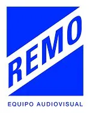

Remo es una compañía dedicada a generar contenidos, realizar ideas y trabajar en colaboración. Desde el 2017 hemos trabajado entre profesionales del cine, arte, diseño y publicidad, abordando los proyectos desde su génesis hasta su finalización.
Creatividad
Rodaje
Postproducción